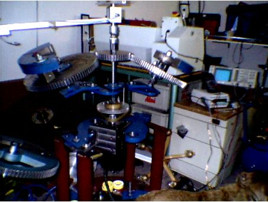
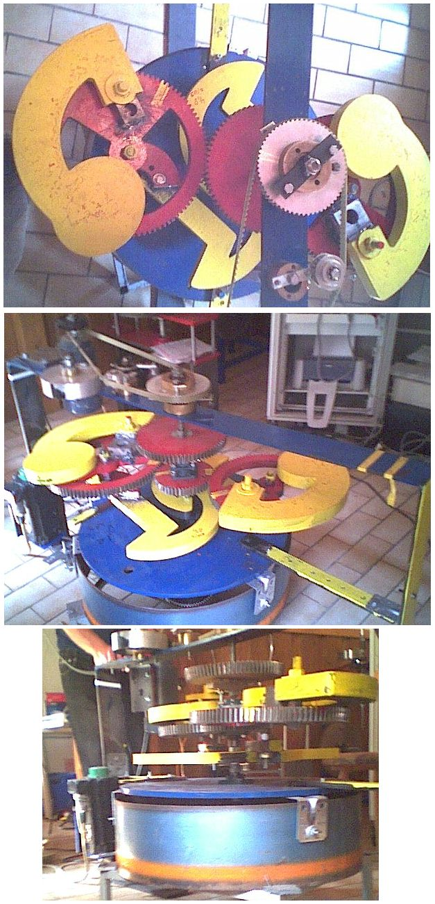
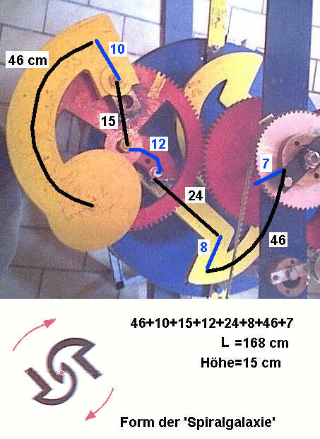

Würth-Technik
Erfindungen von Felix Würth
Frühere Geräte

Die
exzentrisch gelagerten Schwungmassen vollführen je eine Raumbewegung
'innen hoch' und 'außen herunter' aufgrund ihrer Rotation um die
Exzenter-Achse und der gleichzeitigen Rotation um die Hauptachse. Sie
drehen beide gleichsinnig, sind nur in ihrer Phase um 180 Grad versetzt.
Die Achsbeschleunigung erfolgt kurz vor dem 'innen hoch'. Die anschließenede
Achsbremsung ist geringer. Die Differenz ist als Achsbeschleunigung
auskoppelbar.
Hier
ein Java-Applet für frei einzustellende Bahnen auf einer Torusfläche
mit Ei-Querschnitt.
http://www.aladin24.de/Bild/js/TorkadoWuerth.htm
Würth-Getriebe
Das
Würth-Getriebe arbeitet mit Gravitationsbeschleunigung und kann
die auf die Drehachse eingespeiste Leistung verdoppeln bis verdreifachen.
Blick
von oben auf den einen Rotor, der zweite ist genau so, nur um 180 Grad
versetzt. Die Drehung erfolgt im Uhrzeigersinn von oben. Diese Maschine
kann man NICHT AUCH ANDERSHERUM betreiben, im Gegensatz zu den bisherigen
Würth-Modellen. Zumindest müßte dann das Spiralgalaxisteil spiegelverkehrt
montiert sein.
Im zweiten
Bild der Blick von hinten. Das untere gelbe Teil (Form Spiralgalaxie)
ist fest mit der Achse und dem An- und Abtrieb verbunden. An Mittelachse:
Das obere rote Zahnrad ist nur so dran, tut momentan gar nichts. Das
untere rote (kleinere) Zahnrad sitzt nicht fest auf der Achse, es verkoppelt/synchronisiert
nur beide Seiten (leicht, nicht straff):

Das
neue Getriebe arbeitet vollautomatisch mit den Eigenschwingungen des
(mehrfach gefalteten) Armes. Er ist wie eine frei schwingende Feder,
die auch ohne Umdrehung, aufgrund der hohen Masse, vertikal schwingen
kann, beim Rotieren nach außen gestreckt wird und vom Material dann
im kurzen Sägezahnteil periodisch zurückgezogen wird, wahrscheinlich
während das System nach oben wippt (ohne Stroboskop nicht zu erkennen).
Während der Drehung vollführt die Schwungmasse keinen Kreis mehr um
die kleine Drehachse, sondern wandert nur wenige Grad horizontal auf
dem Bogen hin und her. Das bedeutet, sie macht einen kleinen Spiraltorus
(r << R, sehr schmaler Schlauch), der mal dichter und mal dünner gewickelt
ist. Ich bin am Überlegen, ob man es im mitbewegten System als Lemniskate
mit wechselnder Drehrichtung sehen kann, dann wäre das eine mäandrische
Bewegung.
Die
Vertikalschwingung muß über zwei Stufen von unten nach oben
wandern. Damit ist gesichert, daß oben die Schwingamplituden größer
werden können als unten, wenn sie synchron zu den unteren sind., - das
ist der größere Nordpol.
Das
Material dehnt sich also elastisch aus, bis es nicht mehr weitergeht,
und dann springt es zurück in Richtung Normalstellung, wobei über den
Nullpunkt hinaus eine Verdichtung stattfindet und es dann eben schwingt
wie ein Feder-Masse-System, was es ja auch ist. Nur bleibt dieses Feder-Masse-System
nicht nur der Erdanziehung unterworfen, sondern sogar überwiegend der
Fliekraft. Jetzt ist es eine Frage der Abstimmung aller drei Schwingungsrichtungen,
ob sich das Ganze dämpft oder aufschaukelt.
Felix
Würth hat an allen Längen und Winkeln so lange herumexperimentiert,
bis der Ablauf eigenstabil in eine aufschaukelnde Bewegung hineinkonvergiert.
Man kann das Gerät aus jeder Anfangsstellung heraus starten, es bildet
sich von selbst eine optimale Pendelstellung aus. Für ganz bestimmte
Drehgeschwindigkeiten des Rotors geht dann erst recht die Post ab: 0.588
Hz, 1.85 Hz und weitere. Das könnten Subharmonische der Schumannwelle
sein (Ursprung: Erde-Mond-Resonanz). Die beiden Frequenzen liegen auch
in der Global-Scaling Tabelle von Hartmut Müller.
Wir
haben die Gesamtlänge des Pendel-Armes aus allen Einzelteilen (grob)
vermessen, immer in der Mitte entlang, siehe Foto mit Eintragungen:

Und
jetzt kommt das Interessante:
Die
Gesamt-Länge des Armes beträgt horizontal 168 cm (+-2cm), vertikal 15
cm.
Der Schwerpunkt hat aber per Luftlinie nur 40 bis 45 cm horizontalen
Abstand von der Hauptdrehachse (1/4 als Richtwert?). Der Winkel insgesamt
ist wieder (90Grad-arctan(45/15))=18,4 Grad, wie übrigens auch das Sonnensystem
zur Milchstraße geneigt ist.
Gesamtlänge des Armes aus Einzelsegmenten:
168 cm + 15 cm = 183 cm
Betrachtet
man den mittleren Schwerpunkt in vertikaler Richtung, denn alle Eisenarmteile
haben ja auch viel Masse, so liegt er etwa bei 8 cm Höhe, dann ist der
Gesanmtweg zum Schwerpunkt:
168 cm + 8 cm = 176 cm
Rechnen
wir einmal:
Eisen
Z = 26
L= 26*Ce*2^34 = 1.0837 m
phi=(sqrt(5)+1)/2=1.618034..
L*phi = 175.35 cm
Silizium
Z=14
L= 14*Ce*2^34 = 583.5235 mm
L*3 = 175.057 cm
L*Pi= 183.319 cm (= Gesamtlänge des Armes, alle Pendel zusammen)
Die
168 cm allein betrachtet, durch 8 geteilt, ergeben 21 cm. Das ist die
Hyperfeinstrukturwellenlänge von Wasserstoff und eine Resonanzlänge
von Thallium L=81*Ce*2^30, dessen Kernladungszahl Z=81 aus einer vierfachen
Potenz von Drei besteht (=3^4), und damit einen vierstufigen Dreierdurchgriff
zum Proton hat (Bedeutung von Faktor 3 in Bezug auf Energieübergabe
in Hierarchien siehe unten). Thallium hat also mit Protonen zu tun,
und dessen Resonanzlänge deckt sich bei 2^33 mit der Armlänge
(genau wäre 168.8 cm) des Schwerpunktes in rein horizontaler bzw.
radialer Richtung. Werden nur Protonen (Hälfte der Masse) zentrifugal
beschleunigt ? Ist die Massenträgheit nur an die Protonen gebunden
(E=m/2*v^2) ?
Was
die Würth-Maschine mit Eisen zu tun hat, ist klar: Sie besteht
aus Eisen. Und das Eisen soll beim Schwingen Energie herein- und herauslassen
(Dissonanz=L*phi).
Was
sie mit Silizium zu tun hat, auch: Sie schöpft aus dem Erdgravitationstfeld,
in diesem Fall speziell aus einer Subharmonischen der Silizium-Schwingung/Drehschwingung.
Möglicherweise könnte auch eine SiO2-Länge (Z=30, bzw.30*3) passen,
weil das auf der Erde und damit im Gravitationsfeld noch häufiger vorkommt.
Desweiteren
Global Scaling von Hartmut Müller bei a=2, P=0, Y=2,103089E-16m liegt
bei n0=37 an zweiter Stelle (wie analog die Frequenz 0.488 Hz bei n0=-56)
der Wert 176,6 cm . Mir ist zwar nicht klar, was ein Protoneneichmaß
mit Eisen und Silizium zu tun hat, aber immerhin steht dieselbe Länge
in der Tabelle. Da hat also Felix Würth mit seiner millimetergenauen
Einstellung einen Volltreffer gelandet.
Synchronisierung
der drei Schwingachsen
Das
Material versucht, das Volumen zu erhalten. Es wird sich also nicht
gern gleichzeitig in zwei Dimensionen zusammendrücken oder auseinanderziehen
lassen. Als Entspannungsreaktion kann es das eher, weil das keine (immer
falsch geführte) Zwangsbewegung ist. Ein langgezogener Draht wird
in zwei Achsen dünner, ein in Achsrichtung gestauchter Zylinder wird
in 2 Achsen dicker. Aber wird ein Draht länger, wenn man ihn in
zwei Achsen durch eine Schwingung komprimiert ?
Betrachtet man Flüssigkeiten, ist das dort ganz normal:
Bernoulli-Gesetz.
v1*A1=v2*A2
für das in dt durch A1 oder A2 transportierte Volumen (v=Geschwindigkeit,
A=Fläche).
Wie
wird es also im Festkörper bewerkstelligt, daß eine Flächenverkleinerung/Verengung
in 2 Achsen zu einer (geschobenen, nicht gezogenen) Vorwärtsbeschleunigung
führt ?
Zunächst
stellt Felix Würth eine Strömung her, nämlich die schnelle
Rotation um die Hauptdrehachse. Dann wurden nur solche Schwingungszeiten
per variabler Armlänge eingestellt, die die Einzelschwingungen
günstig verkoppelten. Als Ergebnis kam eine Armlänge heraus,
die kurioserweise gleich doppelte Bedeutung hat: Dissonanzlänge
L*phi von Eisen und dreifache Resonanzlänge von Silizium. Die Erste
braucht man für eine Phasenverschiebung der radialen Schwingung
um Pi, die Zweite für das resonante Einspeisen der Gravittaionsenergie.
Beide zusammen bauen den richtigen Torkado auf. So macht es auch jeder
Organismus,
der in die richtigen Resonanzlängen hineinwächst oder hineinschrumpft,
um die brauchbaren natürlichen Energien der Umwelt zu verwerten.
Jede
Resonanz arbeitet optimal mit einer Phasenverschiebung von Pi/2, das
kennen wir zum Beispiel von LC-Schwingkreisen, oder einfach das Hin-
und Her der potentiellen und kinetischen Energie beim einfachen Pendel,
der eine Wert läuft als Sinus, der andere als Cosinus (Kreis im Komplexen).
Geht die Resonanz verloren, triftet auch die Phasenverschiebung weg,
am Schlimmsten ist es bei Phasenverschiebung Pi, da arbeitet alles gegeneinander,
da haben wir maximale Absorption. Resonanzlänge L mal goldener Schnitt
phi IST maximale Absorption (von Energie an der Hauptdrehachse).
Ich folgere jetzt mal daraus (Vermutung), daß dies im Schwingsystem
eine Phasenverschiebung von Pi bewirkt, und am anderen Ende, dort wo
die Schwungmasse sitzt, müßte deshalb die Schwingung atypisch ablaufen
und gezwungen sein, um 180 Grad versetzt zu arbeiten. Also die normale
vertikale Schwingbewegung wird davon nicht beeinflußt, weil hier die
reine horizontale Länge ausreichend paßt (addiert man nicht die 8 cm
der Höhe, dann sollte man vielleicht die fehlenden ca. 8 cm bis zum
Ende der Schwungmasse (und nicht deren Mitte) dazurechnen.)
Aber
die Schwingung der 175-cm-Länge wird wegen der Phasenverschiebung genau
dann nach innen gehen (gegen die Zentrifugalkraft), wenn auch die gravitationsbedingte
Absenkung wieder zurück nach oben geholt wird. Aus der zweidimensionalen
Streckung wird anschließend eine beidseitige Verdichtung. Die dritte
Dimension hat dann keine andere Wahl, als - wie eine Flüssigkeit-
in Drehrichtung zu beschleunigen. Das ist das Verhalten des Eintauchens
in den Torkado-Südpol und auch der Moment der kurzen Impulsabgabe in
Richtung Output.
Die sich aufbauenden Federkräfte stoppen dann das Vorwärtsstreben, und
wenn sich die (Torus-)Querschnittsfläche wieder vergrößert, und sowieso
eine relative Rückwärtsbewegung (Bahngeschwindigkeitsabnahme) eintritt,
ist die Schwungmasse gerade im Freien Fall nach unten und tankt neue
Gravitationsenergie. Dieser Vorgang dauert länger und geht sanfter ab.
Der Bremsimpuls wird dadurch dissipativ abgefangen in den verwinkelten
Ecken des langen Armes und erreicht die Drehachse kaum. Das Zurückfallen
wird schließlich auch gebremst durch die sich aufbauenden Federkräfte,
die in der nächsten Halbwelle einen zusätzlichen Anteil in den kurzen
Vorwärts-Output-Impuls geben.
Teil 1 Teil
2
Index